Aula 3
Macro e micromorfologia dos principais agentes etiológicos das micoses
O estudo da macro e micromorfologia dos fungos é fundamental para o diagnóstico laboratorial das micoses, pois permite reconhecer estruturas e padrões característicos de diferentes agentes etiológicos.
Micoses superficiais
Como já falado no Módulo 1, as micoses superficiais são infecções causadas por fungos que invadem as camadas externas da pele, constituída pela camada córnea e a haste livre do pelo.
• Pitiríase versicolor (PV)
A PV é causada por espécies do gênero Malassezia. São fungos lipofílicos e aquelas mais relacionadas ao aparecimento da PV são M. globosa, M. restrita e M. sympodialis. O diagnóstico pode ser realizado por meio de exame direto e não é necessária a realização de cultivo. Em parasitismo se apresentam como fragmentos de hifas curtas de parede espessas, hialinas, podendo apresentar leveduras de brotamento fialídico.
Malassezia furfur
Em microscopia observam-se leveduras globosas, oblongas a elipsoidais, podendo também ser observadas
hifas curtas.
A cultura não é realizada nos meios tradicionais de Micologia Médica, pois os agentes da PV necessitam, para seu crescimento, de ácidos graxos inexistentes nesses meios de cultura.
• Piedra branca
A piedra branca é uma micose superficial de caráter crônico que acomete a cutícula da haste livre do pelo. Seu agente etiológico é conhecido por leveduras do gênero Trichosporon. As espécies mais frequentemente relatadas são T. asahii, T. inkin, T. cutaneum, T. ovoides e T. loubieri, as quais, em cultivo em SDA a 28 ºC, se apresentam como colônia leveduriformes, de aspecto cerebriforme. Em parasitismo observa-se uma trama de hifas hialinas formando artroconídios e blastoconídios livres ou aderidos a elas.
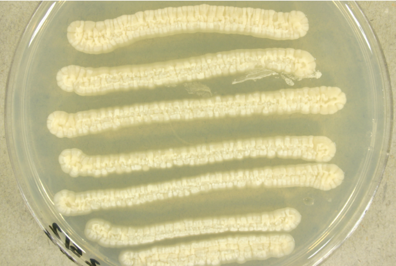
As culturas de todas as espécies do gênero Trichosporon se apresentam como colônias leveduriformes de cor variando do branco ao creme, com aspecto cerebriforme
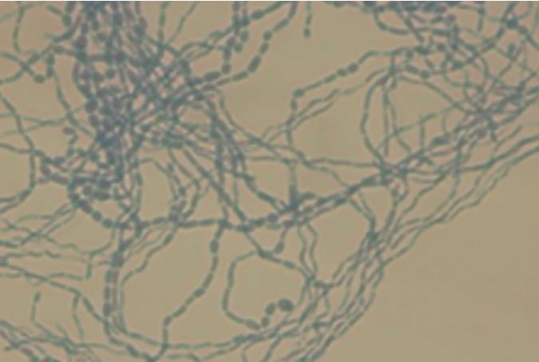
Na microscopia, todas as espécies do gênero Trichosporon se apresentam como hifas hialinas formando artroconídios e blastoconídios livres ou aderidos às hifas
• Piedra negra
Essa é uma micose superficial de caráter crônico que acomete a cutícula da haste livre do pelo. Tem como agente etiológico Piedraia hortae. Esse fungo cresce à temperatura ambiente em SDA como colônias negro esverdeadas, delimitadas, acuminadas, lisas e ocasionalmente aveludadas. Do ponto de vista microscópico se observam nódulos pigmentados de cor café, constituídos por hifas septadas de paredes grossas. Também é possível ver ascos fusiformes com dois ou mais ascósporos.
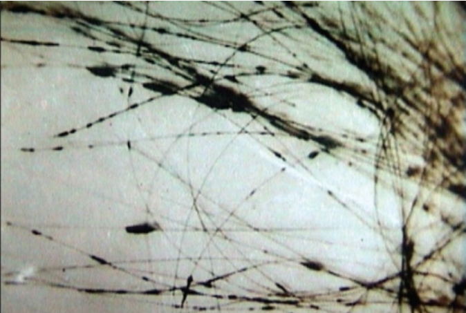
Ao microscópico se observam nos fios de cabelo afetados pelo fungo nódulos pigmentados de cor café, constituídos por hifas septadas de paredes grossas. Às vezes é possível observar ascos e ascósporos
• Tinha negra
A tinha negra é uma micose superficial de caráter crônico que acomete geralmente a pele das palmas e plantas dos pés. O seu principal agente etiológico é Hortaea werneckii, embora existam relatos de casos que foram originados de outros fungos demáceos, como Stenella araguata e Scopulariopsis brevicaulis.
Hortaea werneckii
Colônia crescida em SDA e/ou Mycosel® à temperatura ambiente. Quando jovens, as colônias são cremosas
(observe o ápice da figura) e, quando envelhecem, se tornam filamentosas (ver a porção à direita na
parte inferior da colônia).
Na microscopia (exame direto) se observam elementos fúngicos pigmentados, com os extremos hialinos.
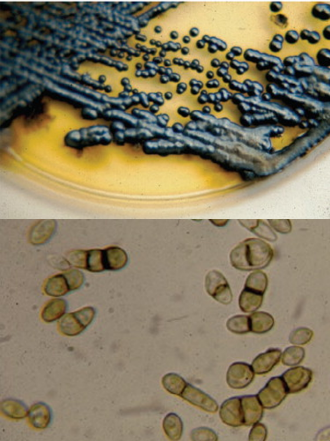
Hortaea werneckii
Morfologia em parasitismo nas micoses superficiais
| Micose e agente | Morfologia em parasitismo |
|---|---|
| Pitiríase versicolor Malassezia furfur, outras espécies de Malassezia |
Curtos fragmentos de hifas curtas de paredes espessas, hialinas, associadas ou não a leveduras com brotamento fialídico. |
| Piedra branca Trichosporon cutaneum, outras espécies de Trichosporon |
Trama de hifas hialinas formando artroconídios desarticulados, retangulares, esferoides ou poliédricos, observados em nódulos moles, brancos, de cabelos ou pelos. Raramente observada célula brotante. |
| Piedra negra Piedraia hortae |
Novelo de hifas de parede acastanhada, aderidos em nódulo duro e escuro, envolvendo a haste do cabelo. Nódulos maiores contêm lóculos ovalados com ascos em meio às hifas. |
| Tinha negra Phaeaoannelomyces (Exophiala) werneckii |
Nas hifas apicais, em crescimento, paredes paralelas e septos regulares; nas hifas mais velhas, de cor castanho dourada, paredes irregulares e septos irregularmente distribuídos. |
Micoses cutâneas
As micoses cutâneas são causadas por fungos que invadem as camadas da pele (epiderme e derme) e/ou parte intrafolicular do pelo e/ou lâmina ungueal.
• Dermatofitoses
São micoses cutâneas causadas por fungos genericamente denominados dermatófitos, que vivem à custa da metabolização da queratina da pele. Os agentes etiológicos estão incluídos em quatro gêneros principais de dermatófitos, a saber: Trichophyton, Microsporum, Nannizzia, Epidermophyton — responsáveis pelas dermatofitoses. Apresentam-se como hifas hialinas, septadas, ramificadas, formando cadeias de artroconídios. Reproduzem-se por reprodução assexuada (fase anamórfica) por macro e microconídios. Entretanto, em alguns dermatófitos a fase teleomórfica ou sexuada também é encontrada.
Diferenciação entre as fases anamórficas e teleomórficas dos dermatófitos
| Dermatófitos | ||||
|---|---|---|---|---|
| Fase anamórfica | Epydermophyton | Microsporum | Nannizzia | Trycophytum |
| Reprodução assexuada | Macroconídios. | Microconídios abundantes. Escassos macroconídios. | Macroconídios | Microconídios abundantes. Macroconídios escasso. |
| Fase teleomórfica | Não apresenta essa fase. | Arthroderma. | Não apresenta essa fase. | Arthroderma. |
| Reprodução sexuada | Não apresenta essa fase. | Ascósporos. | Não apresenta essa fase. | Ascósporos. |
| Hifas peridiales* | Largas, simétricas e enrugadas. | Curtas, finas e em forma de ossos. | ||
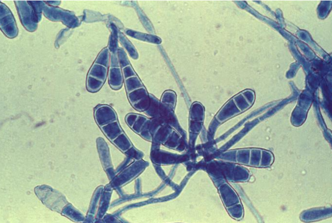
Epydermophyton spp. Produz somente macroconídios, sem microconídios. Macroconídios abundantes, formato em clava ou bastão, parede lisa e relativamente fina, com 2 a 5 septos. Frequentemente em agrupamentos de três ou mais conídios
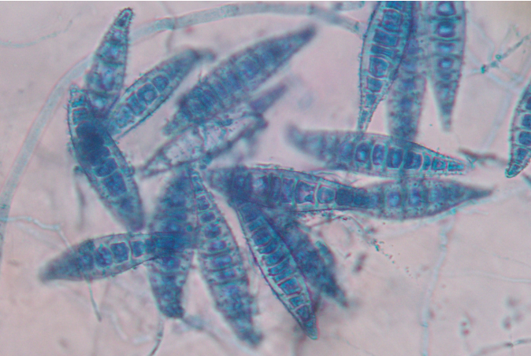
Microsporum spp. Predomínio de macroconídios grandes, fusiformes e rugosos. Macroconídios muito abundantes, formato fusiforme, parede espessa e rugosa, com 6 a 15 septos. Extremidades geralmente pontiagudas. Microconídios poucos ou escassos, se presentes, pequenos e piriformes
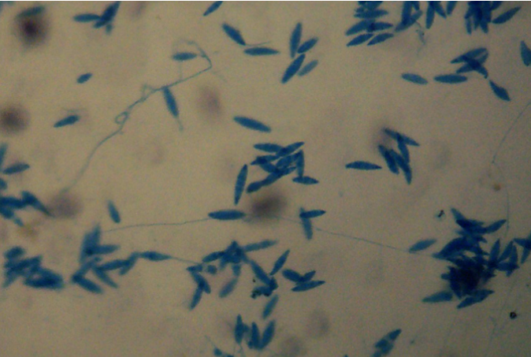
Nannizzia spp. Morfologia semelhante à de Microsporum, mas com diferenças filogenéticas definidas por análise molecular. Macroconídios fusiformes ou elipsoides, parede frequentemente rugosa, multisseptados, com até seis septos
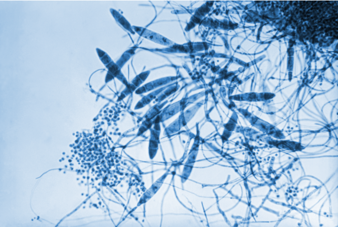
Trichophyton spp. Predomínio de microconídios; macroconídios raros. Microconídios de formato esférico, piriforme ou em lágrima, dispostos isoladamente ao longo das hifas ou em pequenos agrupamentos. Macroconídios raros ou ausentes; quando presentes, são finos, alongados (em forma de charuto ou lápis), parede lisa com 3 a 8 septos
• Candidíases cutâneas
Trata-se de uma micose cutânea cosmopolita causada por leveduras do gênero Candida. Nas candidíases cutâneas, Candida albicans é a principal espécie responsável seguida de C. tropicalis. Entretanto, outras espécies podem causar doença. Nesse gênero se observam hifas hialinas, e blastoconídios, assim como pseudo-hifas e elementos leveduriformes ovalados.
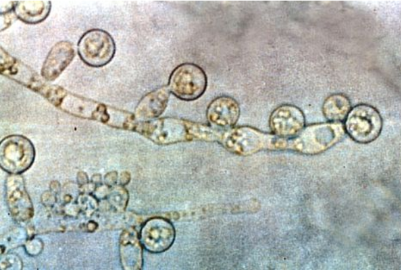
Candida albicans. Ao microscópio, observam-se rede de hifas e pseudo-hifas, blastoconídios ao longo das pseudo-hifas, clamidoconídios grandes, arredondados e de parede espessa nas extremidades
• Dermomicoses
São micoses cutâneas causadas por fungos filamentosos não dermatófitos (FFNDs), que constituem um grupo heterogêneo de fungos geralmente saprófitos. Várias espécies de FFNDs podem provocar dermatomicoses, entre eles fungos dos gêneros Fusarium spp., Aspergillus spp., Penicilium spp., Acremonium spp., Scopulariopsis spp., Neoscytalidium spp. As características morfológicas serão apresentadas no quadro abaixo.
Morfologia em parasitismo nas micoses cutâneas
| Micose e agente | Morfologia em parasitismo |
|---|---|
| Dermatofitose Microsporum spp. Trichophyton spp. Epidermophyton floccosum. |
Hifas hialinas, septadas, ramificadas, de paredes paralelas formando cadeias de artroconídios (aspecto em rosário) em pele, unhas e cabelos. |
| Candidíase mucocutânea. Candida albicans e outras espécies de Candida. |
Hifas de paredes hialinas e delicadas, com septos afastados entre si e blastoconídios justa-septais. Pseudo-hifas e elementos leveduriformes ovalados (5 a 7 µm.) coexistem com as hifas, em maior ou menor abundância. |
| Dermatomicose Fusarium spp. Scopulariopsis spp. Scytalidium / Neoscytalidium spp. |
Hifas hialinas, geralmente um pouco diferentes das dermatofitoses, mas com diferenciação incaracterística. Em alguns casos (Neoscytalidium dimidiatum) as hifas podem ser dematiáceas, acastanhadas. |
Micoses de implantação
As micoses de implantação, ou micoses subcutâneas, são infecções causadas por fungos introduzidos diretamente na derme ou área subcutânea devido a trauma penetrante, gerando um processo inflamatório granulomatoso. Nas lesões, o fungo se apresenta como elementos leveduriformes, hifas, esférulas, corpo muriforme ou a combinação de vários destes.
Morfologia em parasitismo nas micoses subcutâneas
| Micose e agente | Morfologia em parasitismo |
|---|---|
| Cromoblastomicose Fonsecaea pedrosoi, F. monophora, Cladophialophora carrionii Phialophora verrucosa Rhinocladiella aquaspersa Exophiala jeanselmei etc. |
Estruturas globosas de 10 a 12 µm de diâmetro, com parede acastanhada; elementos não septados, unisseptados e outros septados em dois planos, este último denominado corpo muriforme ou esclerótico, também de cor castanha, considerado o elemento parasitário característico da micose. |
| Doença de Jorge Lobo (lobomicose, lacaziose) Lacazia (Lobos) loboi (Paracoccidioides loboi) |
Elementos hialinos arredondados ou esféricos de 8 a 12 µm de diâmetro, paredes espessas, brotamento geralmente unipolar, formando cadeias, observados em tecido. Raramente observados dois ou três brotamentos por célula. |
| Esporotricose Sporothrix schenckii Sporothrix brasiliensis Sporothrix globosa etc. |
Elementos extracelulares hialinos arredondados, de 3 a 5 µm, em navete ou charuto, com brotamento claviforme característico; numerosos elementos redondos intracelulares; corpo asteroide, pode ser visualizado em cortes histológicos (H&E). |
| Feo-hifomicose subcutânea Exophiala jeanselmei E. spinífera, E. moniliae Wangiella (Exophiala) dermatitidis, Phialophora richardsiae P. parasitica, P. repens P. hoffmani, P. bubakii P. verrucosa etc. |
Fragmentos de hifas septadas, acastanhadas, de paredes regulares ou não; septação a espaços regulares ou não; hifas de aspecto toruloide, elementos esféricos de parede espessa, às vezes brotando, e muito raramente, elementos esféricos septados em um só plano. |
| Micetomas eumicóticos Madurella mycetomatis Madurella grisea Pyrenochaeta romeroi Exophiala jeanselmei etc. Acremonium falciforme A. kiliense, A. recifei Pseudallescheria boydii (Scedosporium apiospermum), etc. |
Filamentos fúngicos (> 2 µm de espessura) formando grãos: Grão escuro, cor chocolate, enorme, mais de 1 mm Ø Grão negro, tamanho médio, ~ 100 a 300 µm Ø Grão negro, tamanho médio, ~ 100 µm Ø Grão negro, tamanho médio, ~ 100 µm Ø Grão branco, tamanho médio, ~ 100 µm Ø Grão branco, tamanho médio, ~ 100 µm Ø Grão branco, tamanho médio, ~ 100 µm Ø |
| Micetomas actinomicóticos Nocardia brasiliensis, Nocardia spp. Actinomadura pelletieri Actinomadura madurae Streptomyces somaliensis etc. |
Filamentos bacterianos (< 2 µm de espessura) formando grãos: Grão branco, pequeno (~ 20 a 80 µm Ø) Grão vermelho coral, tamanho médio, ~ 100 µm Ø Grão branco, enorme, mais de 1 mm Ø Grão branco, muito duro, ~ 100 µm Ø |
A seguir ilustraremos os principais agentes etiológicos de cada micose de implantação.
• Cromoblastomicose
Os fungos causadores de cromoblastomicose são negros, melanizados ou dematiáceos, e as espécies mais comumente encontradas são Fonsecaea pedrosoi e Cladophialophora carrioni.
Colônias pardas ou negras, aveludadas, delimitadas ocasionalmente com sulcos e radiações no reverso negro-ocre. Na micromorfologia se observam hifas acastanhadas, grossas e septadas, com aproximadamente 4 a 5 µm de largura. Apresenta três tipos de reprodução assexuada. A mais comum é a disposição em cladospório curto, na qual os conídios se sobrepõem uns sobre os outros. Pode também apresentar fiálides, nas quais uma célula basal ou conidiogênica sustenta um conídio elíptico, formando uma imagem semelhante à de um vaso.
Colônias planas, radiadas, de cor verde-escura ou acinzentada, aveludadas; no reverso apresentam pigmento negro difuso. Na micromorfologia observa-se micélio macrosifonado, septado e pigmentado. Apresenta apenas um tipo de reprodução, baseado em cladospório longo, que se origina de uma célula inicial, com conídios de 4 a 8 µm formando cadeias de 9 a 10 unidades (ou mais).
• Doença de Jorge Lobo
Doença infecciosa granulomatosa crônica que acomete a pele e o tecido subcutâneo, principalmente com lesões queloidiformes, causada por um fungo não cultivável, atualmente denominado Paracoccidioides lobogeorgii. O diagnóstico laboratorial se dá somente por exame direto e exames histopatológicos. No exame direto, realizado com KOH a 20%, se observam leveduras de parede espessa e refringente, medindo entre 5 e 6 por 12 a 14 µm de diâmetro, podendo se apresentar de forma unicelular ou formando cadeias de blastoconídios.
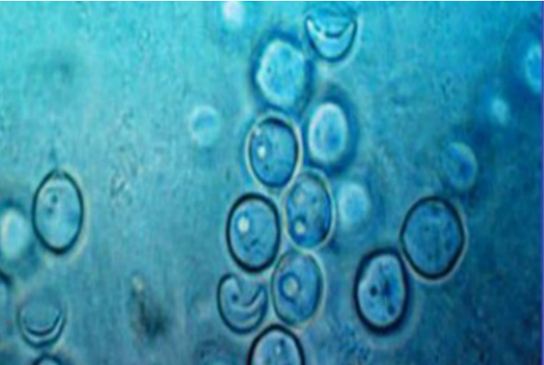
Exame direto de Paracoccidioides (lobogeorgii): leveduras de parede espessa e refringente, podendo se apresentar de forma unicelular ou formando cadeias de blastoconídios
• Esporotricose
A esporotricose é a micose de implantação mais prevalente e globalmente distribuída, causada por espécies de fungos dimórficos do gênero Sporothrix. Os agentes etiológicos mais prevalentes no Brasil são Sporothrix brasiliensis e S. schenckii, mas existem outros como S. pallida, S. globosa, S. lunei, S. mexicana e S. chilensis.
A 25 ºC Sporothrix spp. apresentam-se na forma filamentosa, como hifas hialinas, septadas, ramificadas, com conídios unicelulares de dois tipos: hialinos a castanhos (demáceos). Os conídios hialinos são pequenos, ovoides, surgindo de dentículos distintos na porção apical dos conidióforos. Já os conídios demáceos são grandes, ovoides, com parede celular espessa, sendo observados ao longo de toda a extensão das hifas. A macroscopia da colônia nessa fase evolutiva do fungo, se apresenta inicialmente de cor branca e, gradativamente, ao formar conídios escuros assume coloração marrom a negra. Em parasitismo, ou a partir de espécimes clínicos sob cultivo a 37 ºC em meio de cultura apropriado, Sporothrix spp. se apresentam como leveduras unicelulares ovaladas, globosas e em forma de charuto, podendo apresentar um ou mais brotamentos. Macroscopicamente, a colônia de Sporothrix spp. a 37 ºC apresentam coloração bege amarelada e aspecto cremoso.
![Uma colagem com três imagens, na primeira são dois tubos de ensaio lado a
lado, no primeiro tubo está escrito PDA no topo e 25ºC na base, é uma colônia
escura e aveludada, a base está com um líquido claro, o segundo tubo está
escrito BHI agar no topo e 35ºC na base, apresenta uma colônia clara e
esbranquiçada, na segunda imagem há uma fotografia microscópica com hifas
finas, e na terceira imagem com uma microscopia com um fundo azul mostra
células ovais e alongadas. Na parte inferior da imagem está escrito: Sporothrix
spp.](../assets/images/modulo2/aula3/img14.png)
Sporothrix spp
• Micetomas
Etimologicamente, o termo "micetoma" significa "tumor de filamentos", uma vez que pode ser tanto de etiologia fúngica (eumicetoma) como bacteriana (actinomicetoma), nesse último grupo sendo seus agentes bactérias filamentosas aeróbicas pertencentes à ordem dos Actinomycetales. São conhecidos por vários nomes, como doença fúngica da Índia, doença de Godfrey e Eyre, pé de madura, maduromicose etc. Focaremos o estudo nos eumicetomas. Os eumicetomas são causados por vários fungos hialinos ou melanizados/demáceos.
Mais de 30 espécies foram associadas ao eumicetoma, algumas das quais (fungos melanizados) podem causar feo-hifomicose e cromoblastomicose. Esses agentes são classificados de acordo com a cor dos grãos, que pode ser preta, amarela ou branca. Os grãos consistem em agregados de hifas fúngicas incrustadas em uma matéria dura semelhante a concreto. Mais de 90% dos casos de eumicetoma notificados no mundo são causados por quatro agentes: Madurella mycetomatis, M. grisea, Leptosphaeria senegalensis e Scedosporium apiospermum (Pseudallescheria boydii). Menos frequentemente, Biatriospora mackinnonii (P. mackinnonii) e Pseudochaetosphaeronema larense (Chaetosphaeronema larense) estão envolvidos. À exceção de S. apiospermum — que é o provável estado assexuado da espécie P. boydii —, todos os demais são fungos melanizados (negros), causando o "micetoma de grão preto". Aspergillus spp., Fusarium spp. e Acremonium spp. são outros gêneros de fungos não pigmentados potenciais causadores de "micetoma de grão branco ou amarelado".
Cultivo de M. mycetomatis em SDA
Colônias escuras, de crescimento lento e textura feltrada. Na micromorfologia do fungo corada com
calcofluor observa-se hifas septadas e clamidoconídios intercalados.
Micoses sistêmicas
As micoses sistêmicas são doenças invasivas causadas por fungos patogênicos de porta de entrada pulmonar, podendo atingir vários órgãos e sistemas, exigindo diagnóstico precoce e tratamento adequado para prevenir desfechos graves. No Brasil, essas micoses são endêmicas e representam um importante desafio à saúde pública sendo as mais comuns: coccidioidomicose, criptococose causada por Cryptococcus gattii, histoplasmose e paracoccidioidomicose. Nos tecidos, o agente etiológico é visto como uma esférula ou como elemento leveduriforme, uni ou multibrotante. O rendimento do exame direto é muito bom para o diagnóstico da paracoccidioidomicose e da coccidioidomicose, tornando-se o cultivo um complemento. Já na histoplasmose o cultivo é fundamental para o diagnóstico, pois estes fungos não são visualizados em preparações a fresco ou com potassa, sendo necessário usar colorações como Giemsa ou impregnação argêntea de Grocott-Gomori963-. Mesmo quando esses exames diretos corados são positivos, o diagnóstico é fortemente sugerido, mas requer cultivo para confirmação.
Com relação à criptococose, a presença de levedura capsulada é sugestiva do diagnóstico em espécimes clínicos oriundos de áreas fechadas, mas somente o cultivo seguido de provas morfofisiológicas, incluindo o teste CGB, permite a identificação da espécie, C. gattii ou C. neoformans. A adição de gota de tinta Nanquim ou de nigrosina a 10% ao espécime, permite estabelecer na lâmina de microscopia um fundo negro e evidenciar a cápsula espessa, que permanece hialina envolvendo o fungo.
A seguir ilustraremos os principais agentes etiológicos de cada micose sistêmica em cultivo.
Paracoccidioides spp.
Fase filamentosa: em macroscopia se observam colônias brancas, glabras, bem aderidas ao meio com aspecto de "pipoca estourada". Na microscopia vemos hifas hialinas, septadas, ramificadas, com artroconídios e clamidoconídios.
Fase leveduriforme: macroscopicamente observamos colônia branco bege, com aspecto cerebriforme. Na microscopia vemos elementos leveduriformes arredondados, com parede espessa, aspecto de duplo contorno, com ou sem brotamentos.
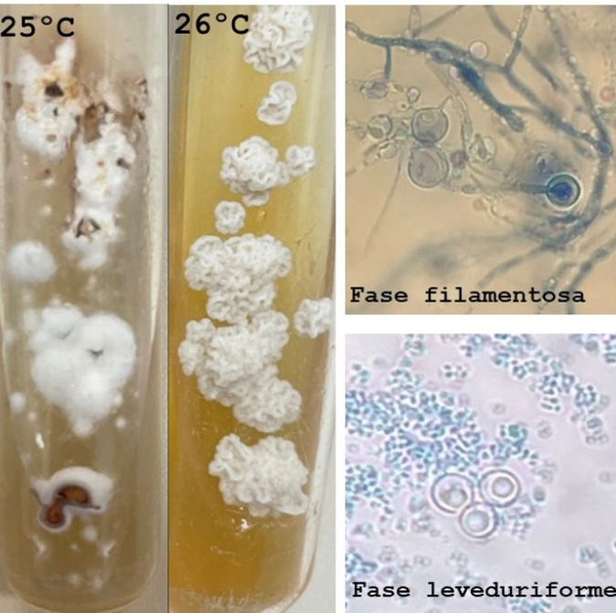
Paracoccidioides spp.
Histoplasma capsulatum
Fase filamentosa: colônias, filamentosas, aéreas, algodoadas; com envelhecimento adquirem cor acastanhada. Na microscopia observam-se hifas hialinas, septadas e ramificadas, com presença de macroconídios tuberculados e microconídios.
Fase leveduriforme: colônias glabras, lisas, branco amareladas, úmidas com leveduras ovais, unibrotantes de morfologia uniforme.
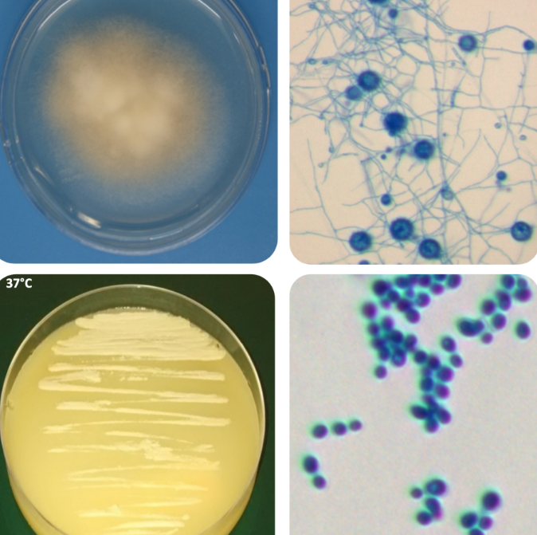
Histoplasma capsulatum
Coccidioides spp.
Em cultivo apresenta colônias de crescimento rápido, inicialmente brancas, evoluindo para acinzentadas, com textura cotonosa. Com o envelhecimento tornam-se pulverulentas devido à produção abundante de artroconídios. Microscopicamente observam-se hifas hialinas, septadas, que se fragmentam em artroconídios retangulares ou em forma de barril, separados por células disjuntoras.
Em tecidos infectados, Coccidioides spp. apresenta-se sob a forma de esférulas de parede espessa, medindo aproximadamente 20-100 µm de diâmetro, contendo numerosos endósporos intracitoplasmáticos.
Cryptococcus spp.
Em cultura em meio Niger, Cryptococcus spp. produz colônias lisas, brilhantes, de coloração marrom, com aspecto mucoide característico, decorrente da produção abundante de cápsula polissacarídica. Microscopicamente observam-se leveduras arredondadas ou ovais, que se reproduzem por brotamento de base estreita, envoltas por cápsula espessa.
Preparação direta com tinta nanquim evidenciando levedura encapsulada, compatível com Cryptococcus spp. Observa-se célula arredondada com brotamento de base estreita, circundada por halo claro correspondente à cápsula polissacarídica, contrastando com o fundo escuro da preparação (contraste negativo).
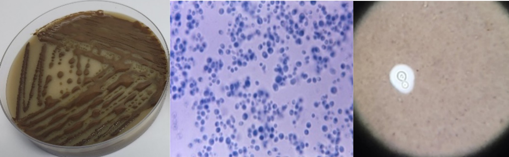
Cryptococcus spp.
No quadro abaixo descrevemos a morfologia em parasitismo das micoses sistêmica:
Morfologia em parasitismo nas micoses sistêmicas
| Micose e agente | Morfologia em parasitismo |
|---|---|
| Paracoccidioidomicose Paracoccidioides brasiliensis Paracoccidioides americana Paracoccidioides restrepiensis Paracoccidioides venezuelensis Paracoccidioides lutzii |
Elementos esféricos de parede espessa, birrefringente, 5 a 10 até 40 µm de diâmetro. Multibrotamento característico, com ligação à célula-mãe por fina ponte citoplasmática, chegando a dezenas em toda a periferia do fungo, denominado aspecto em "roda de leme" ou criptoesporulação. |
| Histoplasmose clássica Histoplasma capsulatum var. capsulatum |
Elementos ovalados de 2 a 3 x 3 a 5 µm de diâmetro, parasitando macrófagos ou células gigantes. Brotamento unipolar ligado à célula-mãe por um istmo estreito. |
| Histoplasmose africana H. capsulatum var. duboisii |
Elementos ovalados semelhantes à variedade capsulatum, porém maior, medindo de 10 a 15 µm. |
| Coccidioidomicose Coccidioides immitis Coccidioides posadasii |
Elementos esféricos, não brotantes, de parede espessa, com 5 a 60 µm de diâmetro. Esférulas maduras são os elementos característicos e estão repletas de endósporos de 4 a 5 µm de diâmetro. |
| Criptococose Cryptococcus gattii |
Elementos esféricos, com ou sem elementos baciliformes, 5 a 10 µm de diâmetro, uni ou bibrotantes, circundados por cápsula, geralmente espessa. Cápsula identificada ao exame direto com tinta nanquim. |
Micoses oportunistas
São micoses causadas por fungos termotolerantes de baixa virulência, de distribuição cosmopolita, que podem causar doença em hospedeiro com algum comprometimento imunológico ou alteração metabólica. A porta de entrada desses fungos é variável, e atualmente são muito comuns no Brasil e de grande importância médica. Entre elas incluímos a aspergilose, causada por fungos do gênero Aspergillus spp., sendo os agentes mais frequentemente associados à doença no ser humano as espécies Aspergillus fumigatus, A. flavus, A. niger e A. terreus; a candidíase, principalmente 20 espécies de Candida spp. causam infecção em humanos; as feo-hifomicoses são infecções superficiais e profundas causadas por fungos que contêm melanina em sua parede celular (fungos demáceos); a fusariose, causada por fungos do gênero Fusarium; a mucormicose e outras hialo-hifomicoses.
A seguir apresentamos algumas características macro e micromorfológica somente dos agentes da aspergilose e fusariose, já que os agentes das outras micoses oportunistas foram anteriormente demonstrados em figuras.
Aspergillus spp.
Principais características morfológicas de espécies do gênero Aspergillus: a figura mostra exemplos de quatro espécies importantes: Aspergillus fumigatus, Aspergillus flavus, Aspergillus niger e Aspergillus terreus. Em cada linha, a imagem da esquerda apresenta o aspecto macroscópico das colônias em meio de cultura, evidenciando diferenças de cor e textura entre as espécies. A imagem da direita mostra as estruturas microscópicas do fungo, com destaque para os conidióforos e as cadeias de conídios, responsáveis pela produção e dispersão de esporos. Essas características são utilizadas na identificação laboratorial das espécies de Aspergillus.
![Colagem de imagens com quatro espécies do gênero Aspergillus spp, primeiro
Aspergillus fumigatus, com colônias escuras no meio e brancas nas bordas,
com aparência aveludada em uma placa de petri, ao microscópio, aparecem
estruturas arredondadas com vários esporos em tons de azul. Depois
Aspergillus flavus com colônias verde-amareladas na placa de petri, na
microscopia, observa-se uma cabeça fúngica grande e cheia de pequenos
esporos em tons de azul. Em terceiro Aspergillus niger com colônias escuras,
quase pretas, ao microscópio, apresenta estruturas arredondadas escuras
liberando esporos. Por último Aspergillus terreus com colônias em tons rosados
e claros, na imagem microscópica, aparecem hifas e estruturas produtoras de
esporos em tons de azul.](../assets/images/modulo2/aula3/img20.png)
Fusarium spp.
Características macro e microscópicas de Fusarium spp.: a figura ilustra aspectos morfológicos típicos de Fusarium spp. Na parte superior observa-se o aspecto macroscópico da colônia em meio de cultura, caracterizada por crescimento rápido, textura cotonosa a flocosa e coloração geralmente clara, podendo apresentar tonalidades esbranquiçadas, rosadas ou amareladas. No centro são mostradas hifas septadas e conidióforos com formação de conídios, estruturas envolvidas na reprodução assexuada do fungo. Na parte inferior observam-se numerosos macroconídios hialinos, alongados e multicelulares, com formato característico em foice ou canoa, típicos do gênero Fusarium. Esses elementos morfológicos são importantes para a identificação laboratorial de espécies de Fusarium em micologia clínica e ambiental.